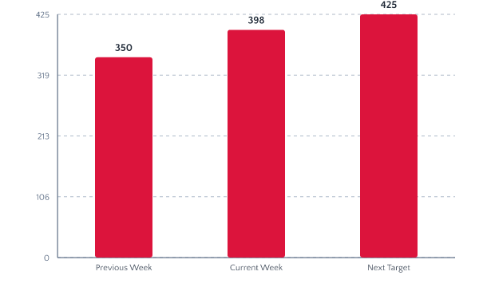
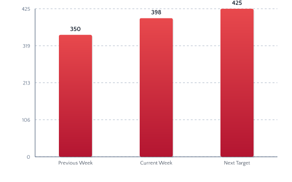
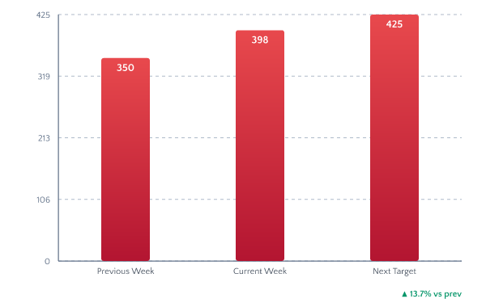

Chart Style Variants
Variant A — Minimal

- No title in chart
- Solid crimson bars #DC143C
- Light dashed grid lines
- Value labels above bars
- Category labels below
- Clean baseline axis
Variant B — Polished

- No title in chart
- Gradient crimson bars (#E8494D → #B31531)
- Subtle shadow behind bars
- Thicker baseline axis
- Refined spacing
Variant C — Dashboard

- No title in chart
- Gradient bars, value INSIDE bar for tall bars
- Trend indicator ▼▲ bottom-right
- Earliest grid lines (very subtle)
- Modern compact bar width